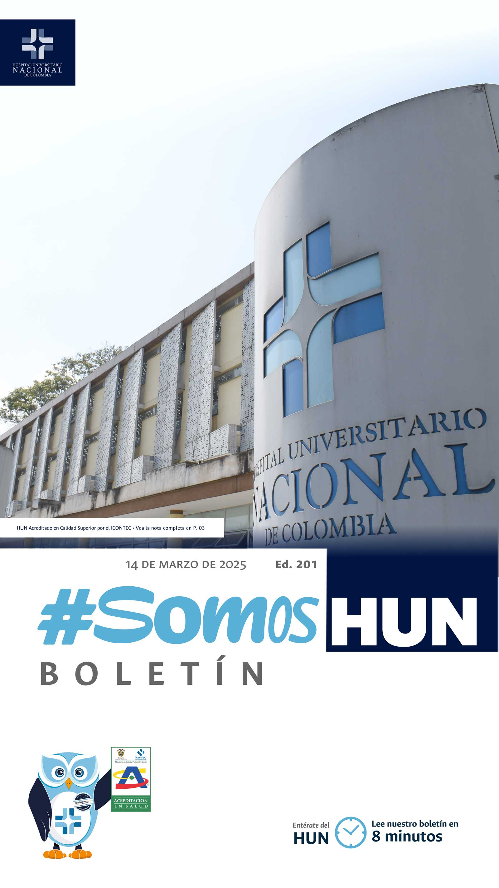
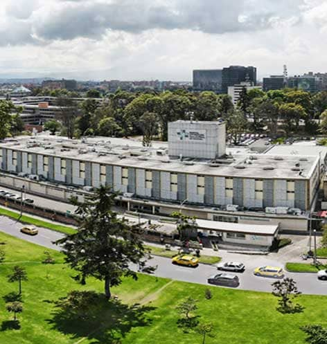
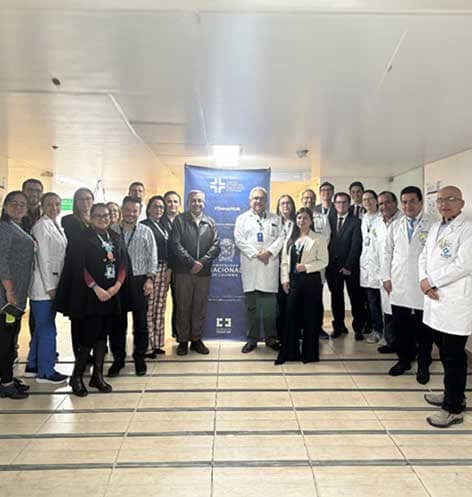
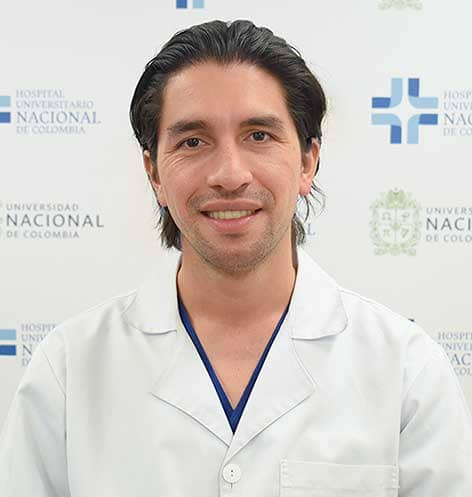
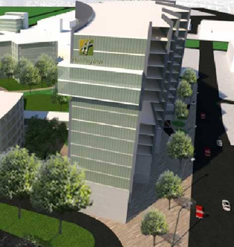
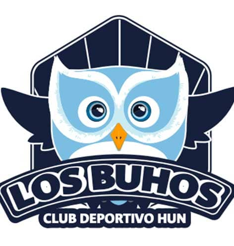
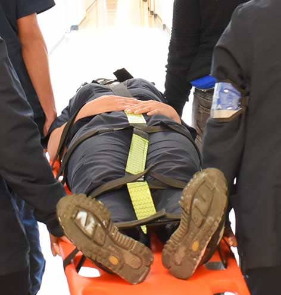
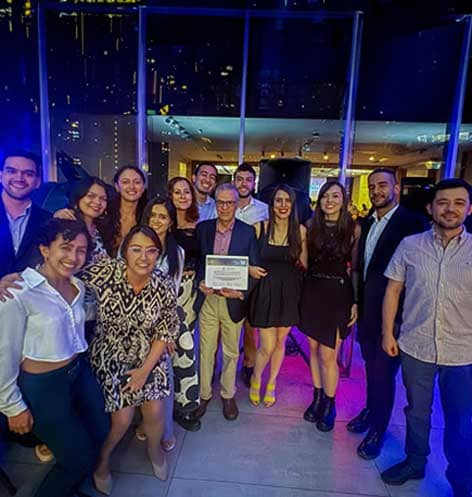

Ver todos los boletines
HUN Acreditado en Calidad Superior por el ICONTEC
A 9 años de la apertura, el Hospital Universitario Nacional de Colombia (HUN), ha sido informado, que luego de un trabajo continuo de crecimiento, mejoramiento y recibir la visita de evaluación en noviembre de 2024, la Junta de Acreditación en Salud del ICONTEC ha decidido otorgarle el sello de Calidad Superior como Hospital Acreditado.Leer más

Cada vez más cerca de Hospital Universitario
Recibimos la visita del par académico designado por el Ministerio de Educación, el Dr. Álvaro Amaya Navas, en el proceso de certificación, bajo el concepto de favorabilidad como escenario de prácticas formativas de nuestro hospital.Leer más

Lanzamiento ECBE Diagnóstico, tratamiento y rehabilitación
del paciente adulto con hemorragia subaracnoidea aneurismática espontánea en el HUN
El Dr. Cristhian Rincón Carreño, Md Neurocirujano fue el líder clínico de este estándar basado en la mejor evidencia disponible. ECBE es un sello del rigor científico UNAL - HUN Leer más

Avanza proyecto de Expansión del HUN
La Universidad Nacional de Colombia avanza en el proyecto para la expansión del HUN, que incluye la gestión del anteproyecto y diseño arquitectónico para el desarrollo de infraestructura hospitalaria. Actualmente en reuniones con la Corporación para definir requerimientosy necesidades actualizadas frente al Plan Arquitectónico presentado en 2023.
Leer más

Ya están los resultados de la convocatoria al Club Deportivo Los Búhos
Mediante criterios de evaluación (Experiencia previa, inscripción a eventos deportivos en el último año, disponibilidad de tiempo), se escogieron los integrantes equipos que representaran al HUN en las competencias de Runing, Ciclismo, Du-Triatlón y Natación.Leer más

Únete a la Brigada HUN
Jenny Ximena Cruz, auxiliar de enfermería en la UCI hace la invitación para unirse a este importante equipo del HUN.
Leer más

Felicitaciones Residentes de Neurología
Con OrgulloHUN les compmartimos que nuestros residentes de Neurología UNAL en compañía de sus docentes, han obtenido dos importantes reconocimientos en el marco del XXI Congreso Colombiano de Residentes de Neurología, que se llevó a cabo en Medellín.Leer más